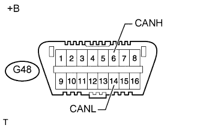
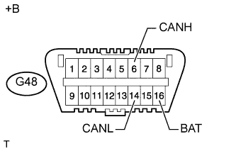
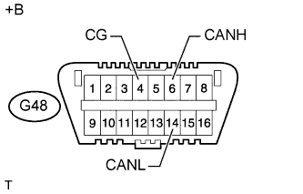

СИСТЕМА ПЕРЕДАЧИ ДАННЫХ CAN (для моделей с правосторонним рулевым управлением без системы посадки и запуска) > ПРОЦЕДУРА ПОИСКА НЕИСПРАВНОСТЕЙ |
| НАИБОЛЕЕ ВАЖНЫЕ МОМЕНТЫ ПРИ ДИАГНОСТИКЕ НЕИСПРАВНОСТЕЙ |
Коды DTC, указывающие на неисправность системы передачи данных CAN, регистрируются также вследствие внутренних неисправностей ЭБУ или датчиков в составе систем, использующих систему передачи данных CAN, а также их неисправностей, связанных с питанием. Поэтому необходимо проверить, выводятся ли коды, указывающие на внутренние неисправности в этих системах или на неисправности, связанные с питанием, одновременно с кодами DTC системы передачи данных CAN.
Можно проверить цепь вспомогательной шины DLC3 или главной шины V1 на отсутствие неисправностей путем проверки контактов DLC3 с помощью SST.
Можно проверить, какие из ЭБУ (датчиков) не поддерживают обмен данными по шине CAN, путем использования функции "Bus Check" (проверка шин) портативного диагностического прибора (если вспомогательная шина DLC3 и главная шина V1 исправны).
Для предыдущих неисправностей шины V1 ЭБУ (датчики), не поддерживающие обмен данными по шине CAN, можно определить на основе комбинации выводимых кодов DTC системы передачи данных CAN.
Если подтверждается обрыв цепи, то перед отсоединением разъемов для проверки убедитесь, что разъемы не ослаблены, путем вдвигания корпуса разъема.
После отсоединения проверьте контакты и корпус разъема на наличие повреждений, деформации, износа и иных дефектов.
| 1.АВТОМОБИЛЬ ПОСТУПИЛ В МАСТЕРСКУЮ |
| |||||
| 2.ПРОВЕРЬТЕ НАПРЯЖЕНИЕ АККУМУЛЯТОРНОЙ БАТАРЕИ |
| |||||
| 3.ПРОВЕРЬТЕ И СБРОСЬТЕ КОДЫ DTC* |
С помощью портативного диагностического прибора проверьте все коды DTC.
| |||||
| 4.ПРОВЕРЬТЕ УСТАНОВЛЕННЫЕ СИСТЕМЫ (ЭБУ И ДАТЧИКИ), ИСПОЛЬЗУЮЩИЕ СИСТЕМУ ПЕРЕДАЧИ ДАННЫХ CAN |
На основании оборудования и характеристик автомобиля определите системы, использующие систему передачи данных CAN (Нажмите здесь).
| |||||
| 5.ПРОВЕРЬТЕ ВСПОМОГАТЕЛЬНУЮ ШИНУ DLC3 И ГЛАВНУЮ ШИНУ V1 НА ОБРЫВ И КОРОТКОЕ ЗАМЫКАНИЕ (CANH - CANL) |
Отсоедините провод от отрицательного (-) вывода аккумуляторной батареи перед измерением сопротивления главной и вспомогательной шин.
|  |
Измерьте сопротивление DLC3.
| Контакты для подключения диагностического прибора | Положение переключателя | Заданные условия | Следующий шаг |
| G48-6 (CANH) - G48-14 (CANL) | Зажигание выключено | OK (54-69 Ом) | А |
| G48-6 (CANH) - G48-14 (CANL) | Зажигание выключено | NG (более 69 Ом) | B |
| G48-6 (CANH) - G48-14 (CANL) | Зажигание выключено | NG (менее 54 Ом) | C |
| *a | Вид спереди разъема DLC3 |
|
| ||||
|
| ||||
| |||||
| 6.ПРОВЕРЬТЕ ШИНУ CAN V1 НА КОРОТКОЕ ЗАМЫКАНИЕ НА +B (CANH, CANL - ВАТ) |
|  |
Измерьте сопротивление DLC3.
| Контакты для подключения диагностического прибора | Положение переключателя | Заданные условия |
| G48-6 (CANH) - G48-16 (BAT) | Замок зажигания в положении OFF (ВЫКЛ) | 6 кОм или более |
| G48-14 (CANL) - G48-16 (BAT) | Замок зажигания в положении OFF (ВЫКЛ) | 6 кОм или более |
| *a | Вид спереди разъема DLC3 |
|
| ||||
| |||||
| 7.ПРОВЕРЬТЕ ШИНУ CAN V1 НА КОРОТКОЕ ЗАМЫКАНИЕ НА GND (CANH, CANL - CG) |
|  |
Измерьте сопротивление DLC3.
| Контакты для подключения диагностического прибора | Положение переключателя | Заданные условия |
| G48-6 (CANH) - G48-4 (CG) | Замок зажигания в положении OFF (ВЫКЛ) | 200 Ом или более |
| G48-14 (CANL) - G48-4 (CG) | Замок зажигания в положении OFF (ВЫКЛ) | 200 Ом или более |
| *a | Вид спереди разъема DLC3 |
|
| ||||
| |||||
| 8.ПРОВЕРЬТЕ ЭБУ, ПОДКЛЮЧЕННЫЕ К ШИНЕ CAN* |
Подсоедините провод к отрицательному (-) выводу аккумуляторной батареи.
Выберите пункт "Bus Check" (проверка шин) в окне "System Select" (выбор системы).
Проверьте отображение подключенных ЭБУ и датчиков в течение 1 минуты.
| Результат проверки | Следующий шаг |
| Все ЭБУ и датчики, подключенные к системе передачи данных CAN, отображаются на экране (шина CAN в данный момент исправна). | А |
| Не отображается один ЭБУ или датчик, подключенный к системе передачи данных CAN (обрыв вспомогательной шины ЭБУ или датчика или прекращение обмена данными). | B |
| Не отображается один ЭБУ или датчик, подключенный к системе передачи данных CAN, или его отображение на дисплее периодически пропадает во время проверки (обрыв с одной из сторон вспомогательной шины ЭБУ или датчика). | C |
|
| ||||
|
| ||||
| |||||
| 9.ПРОВЕРЬТЕ ТАБЛИЦУ КОМБИНАЦИИ КОДОВ DTC (ОБРЫВ ВО ВСПОМОГАТЕЛЬНОЙ ШИНЕ V1, ПРЕДЫДУЩАЯ НЕИСПРАВНОСТЬ - ПРЕКРАЩЕНИЕ ОБМЕНА ДАННЫМИ) |
На основании комбинации выводимых кодов DTC системы передачи данных CAN определите ЭБУ и датчики, прекратившие обмен данными (Нажмите здесь).
| |||||
| 10.ВЫПОЛНИТЕ ПРОВЕРКУ С ИМИТАЦИЕЙ УСЛОВИЙ ВОЗНИКНОВЕНИЯ НЕИСПРАВНОСТИ (ПРЕДЫДУЩАЯ НЕИСПРАВНОСТЬ ГЛАВНОЙ ШИНЫ V1)* |
С помощью портативного диагностического прибора сбросьте все коды DTC.
Выполните проверку с имитацией условий возникновения неисправности на всех жгутах проводов и разъемах, связанных с главной шиной V1.
Проверьте все DTC, выведенные в ходе выполнения проверки с имитацией условий возникновения неисправности. Затем установите неисправный участок.
| |||||
| 11.ОТРЕГУЛИРУЙТЕ, ОТРЕМОНТИРУЙТЕ ИЛИ ЗАМЕНИТЕ |
| |||||
| 12.СБРОСЬТЕ DTC* |
С помощью портативного диагностического прибора сбросьте все коды DTC.
| |||||
| 13.ПРОВЕРОЧНОЕ ИСПЫТАНИЕ |
|
| ||||
|---|---|---|---|---|---|